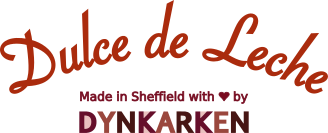

Dynkarken’s Dulce de Leche is a range of caramel spreads made by a small independent company in Sheffield. Read on to learn more about our fantastic flavours, the shops and cafes where you can get hold of it, and all the different ways you can stuff it in your mouth.
Flavours of Dulce de Leche
Dynkarken’s Dulce de Leche comes in four steady flavourings that you can learn more about below. To mix it up I also make limited editions of particular flavour experiences from time to time. To get notified when I introduce new flavours, you can follow Dynkarken’s Instagram or like Dynkarken’s Facebook page.

Slightly Salted
Rich caramel and toffee flavours with an aftertaste of sea salt. The 'Slightly Salted' flavour is an approachable and straightforward jar of caramel.

Turmeric & Sichuan Pepper
Tingley and tantalising. The turmeric adds a spicy complexity to the caramel while the pepper adds a gentle kick. Unlike any caramel you've tasted before.

Cardamom & Fennel
Freshly ground Cardamom and fennel seeds are added to the caramel just before jarring, creating a flavourful mix of sweet and savory flavours.

Vanilla & Cinnamon
A warm blend of wintery spices that accentuates the sweetness of the caramel. Delicious with cheese and salty crackers.
How to use Dulce de Leche
Dulce de Leche lends itself well to be spread on top of most anything that will end up in your mouth including crackers, fingers, waffles, spoons etc etc. If you’re into baking, have a look at the more than two thousand recipes for brownies, cakes, tarts and empanadas that you can make using dulce de leche. However, if you’re just looking to get started, these are my personal favourites:

Spread on toast

Put on pancakes

Eat with Ice Cream
Where to Buy
Currently Dynkarken’s Dulce de Leche is stocked in a handful of independent bakeries, retailers and cafes around Sheffield. Have a look at the map to find your closest retailer:
Allergens
Dynkarken’s Dulce de Leche is currently made in a kitchen that is also used for breadmaking. To avoid cross contamination of wheat, nuts or sesame I take the following precautions:
- The caramel is prepared in heated in trays that are covered in baking paper which hasn’t come in contact with other surfaces
- The trays are covered with aluminium foil when they are in the oven to prevent flour or other material from landing in them.
- The dulce de leche is mixed with spices in a big stock pot which I thoroughly clean before use
- The Jars are sterilized in the same oven. The trays they are on are covered with baking paper and the jars themselves are also covered with baking paper to avoid anything falling into them
- Any utensil I use is only put down on surfaces covered with baking paper which hasn’t been used
Despite these precautions, it is still possible that traces of wheat, nuts or sesame seeds can work their way in to the jars in very small amounts. If you know that even traces at the milligram level is sufficient to provoke an allergic reaction, then I would recommend that you don’t risk eating Dynkarken’s Dulce de Leche.
Allergies are complex, so if you’re unsure if it’s safe for you to eat Dynkarken’s Dulce de Leche, you’re always welcome to email me on jonas@dynkarken.com and ask me questions about the precautions I take and how I make the Dulce de Leche.
Carbon Offsetting
I feel strongly about providing delicious treats without burning up the planet. For that reason I’ve decided to carbon offset every jar of Dulce de Leche I sell. It isn’t entirely obvious how much carbon is produced in the process of making a jar, but as far as I can gather, the answer is in the vicinity of half a kilo of CO equivalent emissions per 200g jar of dulce de leche. In comparison one litre of milk causes roughly one kilo of emissions (largely due to cooling during transport and retail). The emission figure for a jar of dulce de leche includes:
- The production of the Condensed Milk
- The production of the glass jars
- The printing of the labels
- The transport of everything to Sheffield
- The cooking of the caramel here in Sheffield
With a bit of help (thanks Martin!) I’ve compiled a carbon offset spreadsheet with more information on the carbon offset of the different components and the sources used to calculate it. It’s not perfect even by a far shot so I’d be keen to know if you think there are errors, omissions or things that could be improved.
History of Dynkarken
I first tasted dulce de leche when I was living in Santiago in Chile where I had moved to study after growing up in Denmark. The rich caramel spread appealed to my sweet tooth and it didn’t take long before I started making it at home, combining the caramel together with different sweet and savory spices to create new flavours. After moving back to Europe, I kept making Dulce de Leche to share with friends and family who found it delicious and encouraged me to give a go at making it full time. With this in mind I quit my job as a software engineer in the summer of 2018 and set up the company Dynkarken and make caramel spread for a living.
The name Dynkarken comes from a street in my home town, Aarhus in Denmark. Like many English place names, it appealed to me because it sounds nonsensical and silly like a made up noun that ought to exist but doesn’t. There are several theories behind the etymology of the name, my favorite being the theory that it comes from the Danish word “dynkerker” which in the 1700’s was a colloquial term for a pirate, and that specifically a pirate named “Søren Dynkerker” used to live on the street. If you speak Danish, you can read more on the very informative article on Aarhus wiki. Below is a picture of the street as it looked in 1895:

Contact Dynkarken
Write me an email on jonas@dynkarken.com or a traditional letter to Dynkarken, 18-20 Union St, S1 2JP Sheffield, UK.